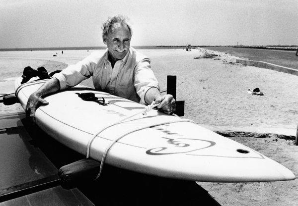

In 1948, 20 year old Newman Darby was the first to conceive the idea of using a handheld sail and rig mounted on a universal joint so that he could control his small catamaran the first rudderless sailboard ever built that allowed a person to steer by shifting his or her weight in order to tilt the sail fore and aft. Darby did not file a patent for the sailboard. However, he is widely recognized as its inventor as well as the first to conceive, design, and build a sailboard with a universal joint. In his own words, Darby experimented throughout much of the 1950s and 1960s and it wasn't until 1963 that an improved sailboard with a conventional stayed sloop rig sail arrangement made it more stable than the one built in 1948. In 1964, Darby began selling his sailboards.
In the 1980s, Darby received a design patent for a one-person sailboat, the Darby 8 SS sidestep hull. His latest project is called the Windspear, a combination kayak, canoe, and surfboard, with a paddle and fin combination. Darby's latest design (2006/2007) is being tested, timed and fine tuned.
Jim Drake was the first to solve many problems of getting the board to sail while Hoyle Schweitzer was the first to be successful in marketing the sailboard.
In 1967, while driving between his home and a contract at the Norton Air Force Base in San Bernardino, Drake had time to reflect on early 17th century based sail ship control. Rudders then were weak and ineffective, mostly used for trimming course. Hence with multi-masted boats, the sailors would trim the upper sails on the forward and rearwards masts to steer the ship.
Dismissing the idea of a design with two upright sails, Drake decided to move the sail by rotation, as moving it linearly would require a mechanical system. Experimenting with a rotational design which became the concept for the universal joint, whereby the angle of attack of the sail to the board could be varied to allow control of both power and direction. Drake finished the design by using an earlier but for them failed invention of East Coast racing sail, and added a wishbone boom.
Through the seventies, Schweitzer aggressively promoted and licensed the Windsurfing International design and licensed the patent to manufacturers worldwide, mainly through competition and the publication of a magazine. As a result, the sport underwent very rapid growth, particularly in Europe after the sale of a sub-license sold to Ten Cate in the Netherlands.
At the same time, Schweitzer also sought to defend his patent rights vigorously against unauthorized manufacturers. This led to a host of predating windsurfer-like devices being presented to courts around the world by companies disputing Windsurfing International's rights to the invention.
In 1979, Schweitzer licensed Brittany, France based company Dufour Wing, which was later merged with Tabur Marine the precursor of Bic Sport. Europe was now the largest growing market for windsurfers, and the sub-licensed companies Tabur, F2, Mistral wanted to find a way to remove or reduce their royalty payments to Windsurfing International.
In 1983, Schweitzer sued Swiss board manufacturer Mistral and lost. Mistral's defense hinged on the work of US inventor Newman Darby, who by 1965 conceived the "sailboard": a hand-held square rigged "kite" sail on a floating platform for recreational use.
Eventually US courts recognized the Schweitzer windsurfer as an obvious step from Darby's prior art. Schweitzer had to reapply for a patent under severely limited terms, and finally it expired in 1987. Shortly thereafter, having lost its license royalty income, Windsurfing International ceased operations.